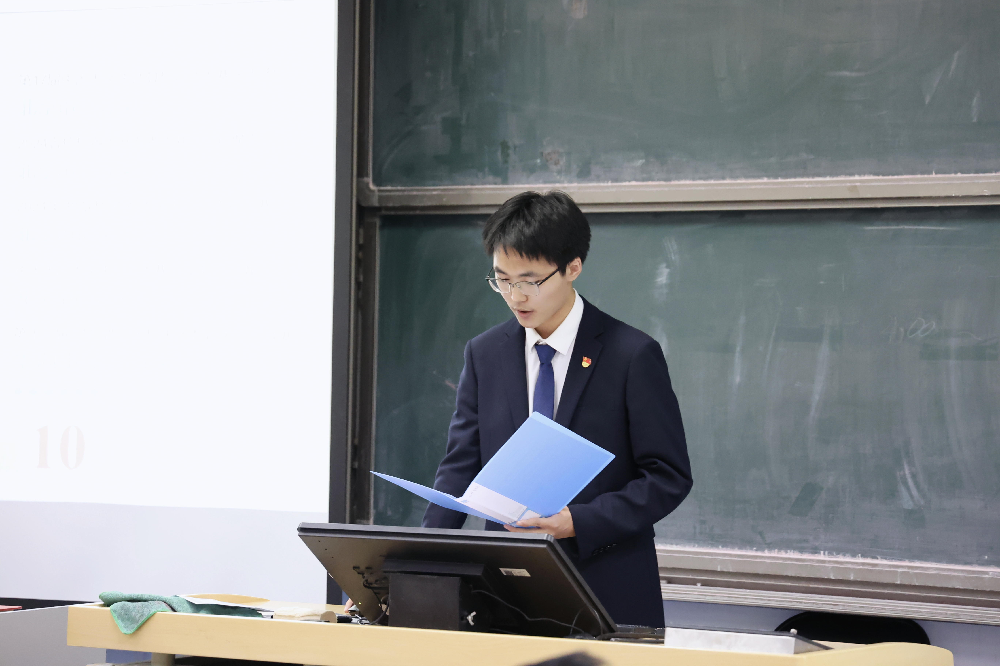
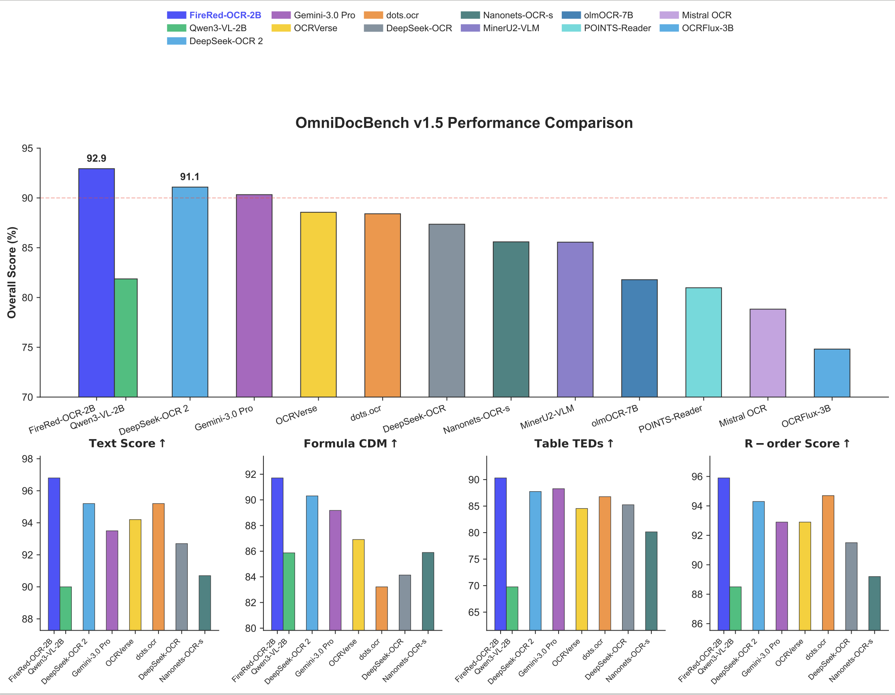
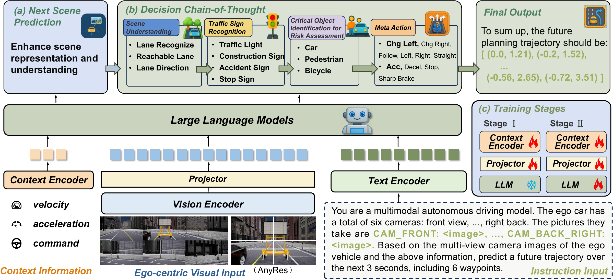

Zuodong Zhong (钟祚栋)
Ph.D. StudentPeking University
I am a Ph.D. student at Peking University, advised by Asst. Prof. Yixing Huang. I earned my B.Eng. (2026) in Automation from the University of Science and Technology Beijing, where I was advised by Prof. Qing Li.
My research focuses on efficient architectures for long-video understanding, particularly sparse attention mechanisms. I aim to help multimodal large language models process long videos more efficiently and effectively. I am fortunate to receive research guidance from Assoc. Prof. Longteng Guo and Prof. Jing Liu.
I previously interned with the Super Intelligence Team at Xiaohongshu, where I was a core contributor to FireRed-OCR.
During an earlier internship at the Institute of Automation, Chinese Academy of Sciences (CASIA), I studied diffusion models and later vision-language models (VLMs) for autonomous driving, and contributed to ReasonPlan. I was advised by Assoc. Prof. Qichao Zhang and Prof. Dongbin Zhao.
I enjoy using the Feynman technique and share my notes on diffusion models and research on my blog and Zhihu column.

Simple and EffectiveMy research philosophy.
News
-
FireRed-OCR is now open source! At release, it achieved SOTA among end-to-end methods on OmniDocBench v1.5.
-
ReasonPlan has been accepted to the Conference on Robot Learning (CoRL 2025)!
Publications & Projects
-

FireRed-OCR- A 2B-parameter vision-language model for end-to-end structured document parsing, combining progressive training with format-constrained reinforcement learning. Achieved 92.94 on OmniDocBench v1.5, reaching SOTA among end-to-end methods at release.
-

ReasonPlan: Unified Scene Prediction and Decision Reasoning for Closed-loop Autonomous Driving- Combining next-scene prediction and decision chain-of-thought to improve multimodal reasoning for closed-loop autonomous driving.
Blogs
All posts →


Research Experience
-
Super Intelligence Team, Xiaohongshu
November 2025 – April 2026, Research Intern.
Core contributor to FireRed-OCR, researching end-to-end structured document parsing.
-
Institute of Automation, Chinese Academy of Sciences
July 2024 – August 2025, Research Intern.
Explored diffusion models and vision-language models for autonomous driving; contributed to ReasonPlan.
Advised by Assoc. Prof. Qichao Zhang and Prof. Dongbin Zhao.
Education
-

-
University of Science and Technology Beijing
B.Eng. in Automation, School of Automation and Electrical Engineering, August 2022 – June 2026
Served as President of the Suo'ao Technology Center student club.
Advised by Prof. Qing Li.
Selected Honors & Awards
- Outstanding Graduate of Beijing Higher Education Institutions
- Baosteel Outstanding Student Award (awarded to only two undergraduates at USTB each year)
- RAICOM National Finals, Second Prize
- Yonggang Scholarship (Top 3%)